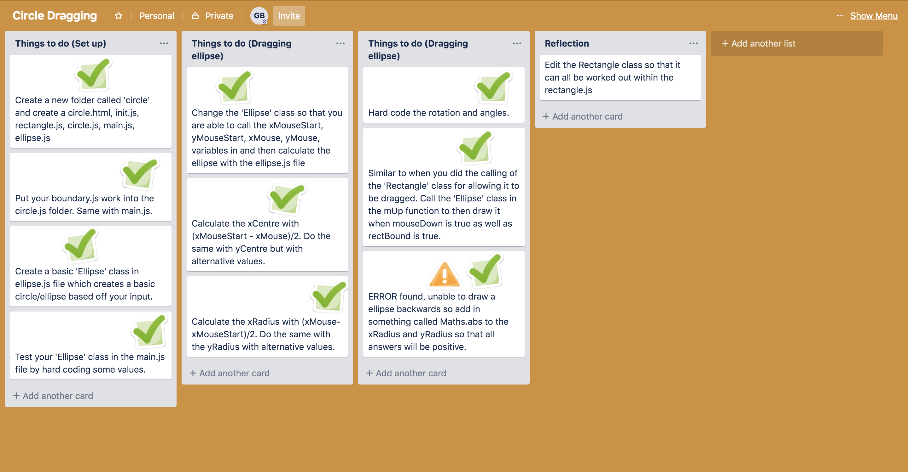
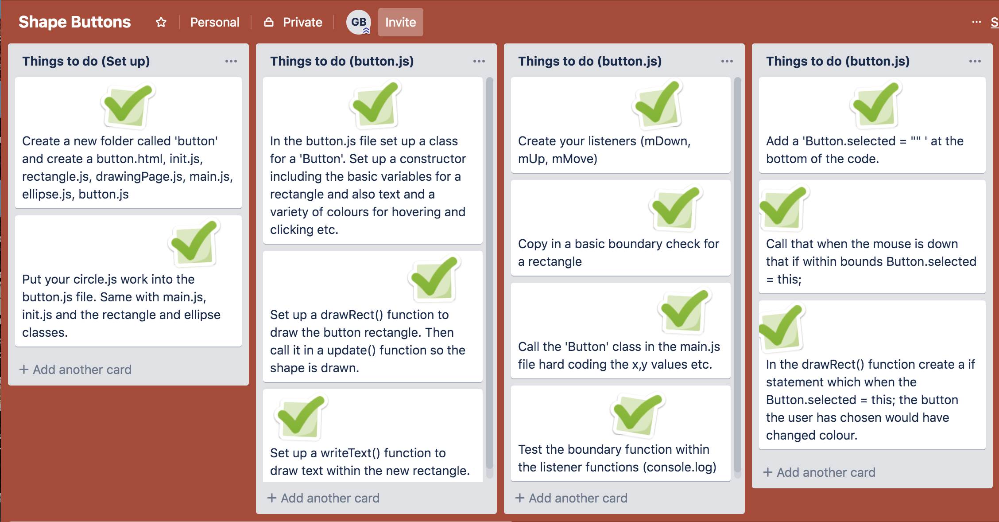
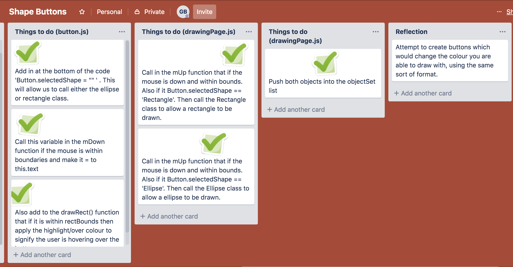
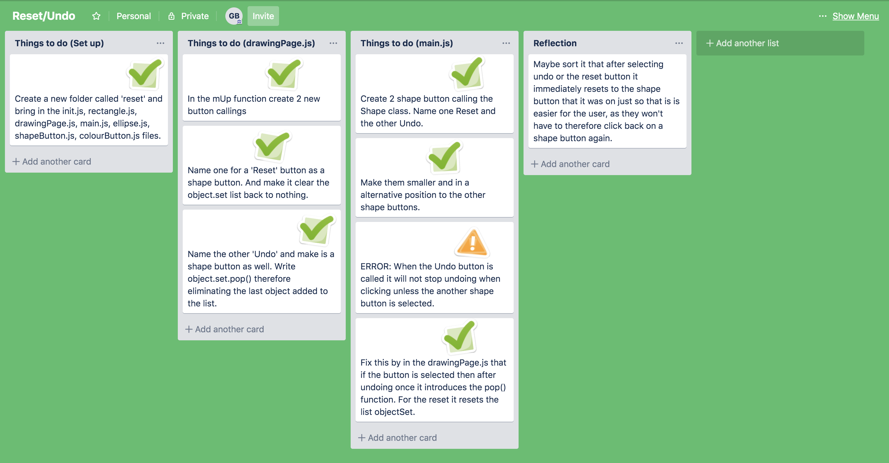
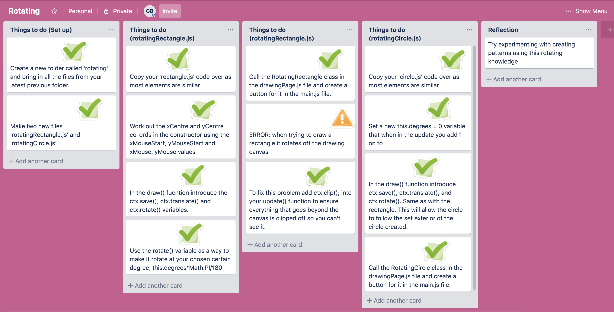

My aim for this assessment is to create a drawing application. Which is easily accessable and easy to use. It should allow you to draw shapes a variety of shapes and change colours by the click of a button.
Within this Sprint I want to be able to draw a rectangle within a defined area on a canvas (within a boundary).
Below is my Trello board for this page:

Below is my Trello board for this page:

This video is a test for checking my boundary check works. I clearly move the mouse around the screen to inspect where on the console it reads 'true' or 'false'. Testing all the edges and corners to ensure it extends to all areas and won't be able to be broken.
In this video you will be able to see me testing the dragging function. Checking that it obeys the boundary function and will only allow a rectangle to be drawn if it is within the boundarys and the boundary check is 'true'.
Within this second Sprint I wish to be able to draw both rectangles and ellipses' within a boundary. Also being able to utilise buttons to alter between my chosen shape to draw with.
Below is my Trello board for this page:
Below is my Trello board for this page:
 This video is a test for checking that I am able to draw a ellipse within the boundary and without faults. I click and drag within and outside the drawing canvas as well as dragging backwards to check that the application has no faults with that as it did used to change the values to negative meaning I was unable to draw a ellipse backwards. However I have added code to fix that and it appears to be working.
In this video you will be able to see me testing to check that the buttons work. I change the selection of my buttons again checking that the boundary still works for drawing both shapes. Then also checking that the buttons change colour when hovered above and also when selected so that the user is able to see what shape they are currently drawing with. All seems to work well.
Within this third sprint I want to be able to selected between different colours to change the colour which my user is able to draw shapes with.
Below is my Trello board for this page:


This video is a test for checking that I am able to click between the colours and for them to change the colour of the shape that I draw based off the colour I chose. It is also the check to see that when clicking on the colour the linewidth changes colour to display it is highlight. All seems to work well.
I have completed making a undo and reset button in this sprint, so the user is able to remove mistakes on the application.
Below is my Trello board for this page:
In this video you will be able to see me testing to check that my reset and undo buttons work. After fixing problems such as the fact that the click wasn't working properly unless I chose the shape button again therefore causing it to constantly undo. After fixing those problems as shown in this video it all works well. However later issue to fix would be perhaps for it to go back to its orignal shape after undo is selected instead of having to go back and click on the shape again.
In this sprint I am going to introduce 2 new shapes, a line and then a circle, and create buttons for both.
Below is my Trello board for this page:


As you can see in this video I am checking to see that my line button works. I am checking to see that similar to my other buttons it remains within the canvas and doesn't allow the user to draw outside of it. Also checking to see the line changes colour correctly. All is working good, expect a later issue I should fix is to have a default colour so if a shape is selected it will draw a shape despite not having chosen a colour yet. As you can see I am yet to have this as shown in the end of this video.
When watching the video below you will see that I am testing to check my circle button works. This button should create a perfect circle, unlike the ellipse. As shown in the video I test to ensure that no matter what size the user draws the scaffolding rectangle a circle will not be drawn unless a perfect circle is able to be drawn. It can also be drawn in all directions and doesn't draw beyond the canvas which is good. One thing I might change later on is creating a scaffolding circle so that it is easy to draw a shape for the user instead of basing the circle off a rectangle.
Here I attempt to make new shapes and include a element of animation. With a rotating circle and rotating rectangle.
Below is my Trello board for this page:
In this video you can see as I check to see that both my rotating rectangle and rotating circles don't go past the canvas boundary. You can also see me checking that all the colours work which they do and is good! Perhaps introducing different colour opacitys would be cool so that when overlapping the shapes you could see them better and create cool patterns.
In this sprint I am cleaning up my style and format of the drawing application as well as creating a brush and pattern button.
Below is my Trello boards for this page:


You will see me in this video testing my new buttons and width buttons with the brush, as well as checking all my style is good. The colours no longer glitch and they click through perfectly which is good. The pattern button works well and you are able to create a variety of designs based off the rectangle drawn. It also doesn't draw beyond the canvas. However I a future problem to fix would be to make the pattern as big as the users rectangle drawn as it is a bit confusing otherwise as the pattern appears large due to the rectangles forming it being the size of the drawn shape by the user. The brush works well and works with the lower opacity colours well. Also all the width buttons work and are all the right sizes depending on the button chosen. However I think one problem I would alter later on is creating a default size for the brush so that the user can draw immediately after selecting the brush.
Program is designed so new features can be added easily and old ones removed.
I have addressed this based off the way that my program has been designed
For program elements including colours, buttons, shapes, have all been programed as objects. This therefore means that each is almost like a self-contained modular piece of code, that takes a defined set of parameters to work.
(Many of these pieces of code take basic mouse data and colour information).
All objects are built to a similar structure, and compulsorily contain a update function which means that they can appear on the interface utilising the update call.
Management of most of the objects happens in a central file, aka. drawingPage.js.
The idea behind this is that an experienced programmer is able to easily remove elements or add new features. Also the code is throughrally commented so it is easy to change via this as they are precise and formative.
An example of future proofing found in the code is through creating loops for my colour
buttons so that it is easier for someone to come in and alter it, simply a change of two numbers.
Does the program work well?
Free of bugs, loads quickly, works on different browsers.
Program is in pure javascript. It has no graphics so therefore loads very quickly. I have tested this by using a live web server to store my versions, and have of course observed loading performance as I have been developing.
To ensure the program works well I have systematically tested it. Tested user interactions, through position of clicking and direction of dragging. This has included careful checks around boundaries.
The use of Math.abs function was discovered after testing failures drawing circular shapes. (because these objects were being given negative radius values).
Any new components were tested prior to being added to the main program.
At various stages in sprints console logging was used to analyse boundary test functions, and to locate problems when bugs appeared.
Trialling different options for allowing the user to draw lines on screen. Giving a line or rectangular guides so that the user can see where their line will be drawn. Also trialling different colours for the colour buttons, at times lowering the opacity so that the entire rainbow is avaliable to the user.
Finding situations when objects drew outside of the drawing area (in spite of having in.boundary parameters) led to the use for the clip() function. Even discovering that the undo button would continue to undo unless a different button was chosen, therefore introducing the pop() function to remove just one aspect drawn in the objectSet list. Also trailling different sizes, placement and colours for buttons so that the user has a variety of colour options as well as perfect positioning of the buttons for all elements (Shapes, Colours, Width). This placement has been tested to ensure easy access to change colours for user as well as swapping shapes and selecting widths for the brush.
The agile process allowed planning and development to happen together.
Breaking the project up into smaller pieces, allowing each element to be focused on and allowing a backup file to retreat to.
Created repeated cycles of plan, then develop, and then finally test. One cycle of this is also known as a sprint.
After two or three sprints I got a much clearer idea of what I could achieve and my aims became much more focused and realistic.
Helped to see the project in a highly simplified form at the start (potentially shippable product).